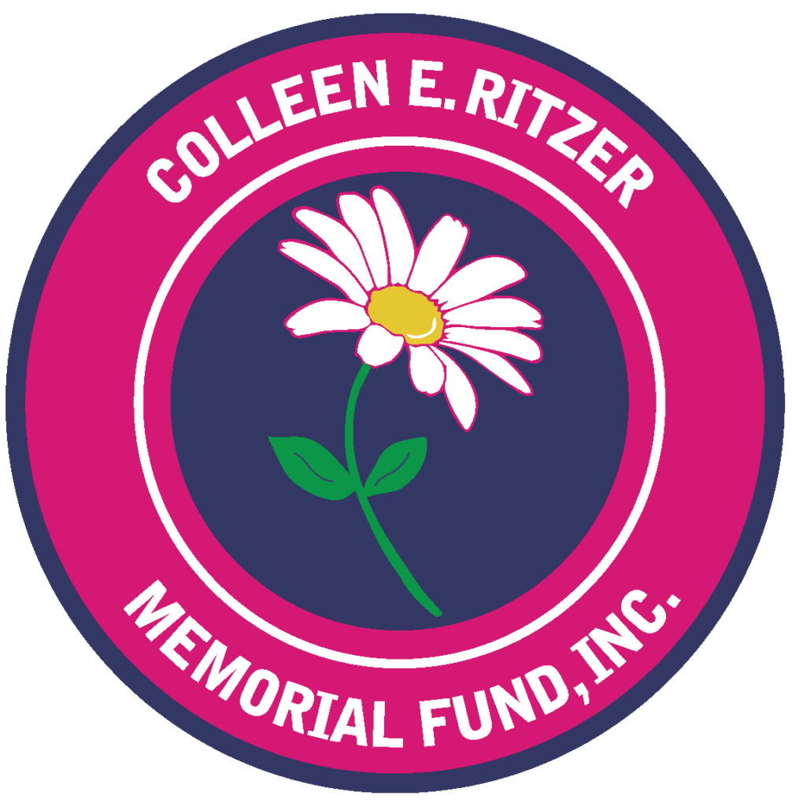

One Wish makes life better for kids one birthday at a time
August 20, 2022 Hannah Finn was 14 years old when she began using
her babysitting money to give homeless kids and teens a birthday
worth remembering. Now a 19-year-old student at UMass Amherst,
Finn’s nonprofit, the One Wish Project, brings better birthdays to
hundreds of kids in communities around the state, and Salem is
about to be the project’s next stop.
Delivering happy birthdays to homeless children
September 12, 2022 Hannah Finn has been running the One Wish
Project, which provides birthday cakes and celebrations for
children living in homeless shelters and in DCF. Her company is
expanding operations into Salem in October.
Light a Candle Gala Marks Fifth Anniversary of Charity Project
Started by Andover Student
May 10, 2022 The One Wish Project, a charitable effort founded by
an Andover High School student to provide birthday celebrations to
children experiencing homelessness celebrated its 5th anniversary
on June 2 with a gala at the Andover Country Club.
Making sure everyone gets a birthday party
December 21, 2017 It started out as a hobby and ended up being a
labor of love. Hannah Finn, 14, had always liked baking. But then
she found out that some homeless children staying at Lazarus House
in Lawrence sometimes had birthdays without cake.
Red Cross Honors Local Heroes
MARCH 28, 2018 Heroes take action to benefit others. All kinds of
heroes are being honored today at the DoubleTree by Hilton Boston
North Shore in Danvers, where the Northeast Massachusetts Chapter
of the American Red Cross is holding its annual Community Heroes
Breakfast.
View More
Granting 'One Wish' at a time
January 14, 2021 It started with one cake made from scratch and
gifts bought with her babysitting money. Now Hannah Finn's One
Wish Project is on the way to providing happy birthdays to more
than 250 children.
Hannah Finn Honored for Outstanding Volunteer Service at
AwardPresentation
When Hannah entered high school, she wanted to start challenging
herself in many different ways. One way was to get involved in
community service. She was aware of the Lazarus House in Lawrence
and understood that the children who live there probably get very
little for their birthday, if anything at all.

Inspire Kindness & One Wish Project
December 21, 2021 In 2020, Colleen E. Ritzer Memorial Fund, Inc.
created the Inspire Kindness scholarship. Hannah Finn, the
inaugural recipient from Andover, was the inspiration for this
scholarship.
Kudos to selfless acts of two, local people
August 24, 2017 In belated response to two heart-warming articles
published in the Aug. 3 Townsman, the first about a young teen who
bakes birthday cakes for homeless children and the second about a
local hairdresser who volunteers her time to give free haircuts to
troubled children residing at a group home.
Cakes for kids: A tasty way to pay it forward
Aug 3, 2017 It started out as a hobby and ended up being a labor
of love. Hannah Finn, 14, had always liked baking. But then she
found out that some homeless children staying at Lazarus House in
Lawrence sometimes had birthdays without cake.
2018 Spreading Smiles Award Winner Hannah Finn
When Hannah entered high school, she wanted to start challenging
herself in many different ways. One way was to get involved in
community service. She was aware of the Lazarus House in Lawrence
and understood that the children who live there probably get very
little for their birthday, if anything at all.
Hannah's Cakes
August 24, 2017 Hannah Finn never expected to get into the cake
making business. Up until last spring, the 14-year-old spent most
of her free time performing on the school gymnastics team, and
playing with her two dogs, three cats, and fish. Then, her mother,
Claudia Mintz, mentioned that it was time for her Hannah to begin
her community service project, which Mintz believes fosters
independent thinkers.
View Less